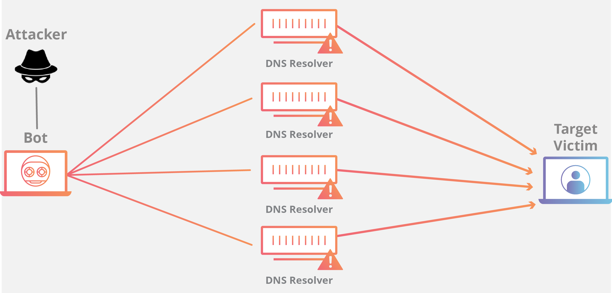

<?xml version="1.0" encoding="UTF-8"?>
<rss version="2.0"
xmlns:content="http://purl.org/rss/1.0/modules/content/"
xmlns:dc="http://purl.org/dc/elements/1.1/"
xmlns:slash="http://purl.org/rss/1.0/modules/slash/"
xmlns:atom="http://www.w3.org/2005/Atom"
xmlns:wfw="http://wellformedweb.org/CommentAPI/">
<channel>
<title>毒奶博主丨欢迎使用代理访问本站。 - XDDOS</title>
<link>https://limbopro.xyz/tag/XDDOS/</link>
<atom:link href="https://limbopro.xyz/feed/tag/XDDOS/" rel="self" type="application/rss+xml" />
<language>zh-CN</language>
<description></description>
<lastBuildDate>Sat, 28 Dec 2019 23:52:00 +0800</lastBuildDate>
<pubDate>Sat, 28 Dec 2019 23:52:00 +0800</pubDate>
<item>
<title>3个方法秒解各种DDoS丨 终极防御教程（可快速部署且免费）</title>
<link>https://limbopro.xyz/archives/DDoS.html</link>
<guid>https://limbopro.xyz/archives/DDoS.html</guid>
<pubDate>Sat, 28 Dec 2019 23:52:00 +0800</pubDate>
<dc:creator>毒奶</dc:creator>
<description><![CDATA[本文隶属于 网站优化 分类，点击分类名称查看更多相关主题；[post cid="6949" cover="https://limbopro.xyz/usr/uploads/2019/12/237...]]></description>
<content:encoded xml:lang="zh-CN"><![CDATA[
<p></p><p>本文隶属于 <a href="../../../category/Typecho/index.html">网站优化</a> 分类，点击分类名称查看更多相关主题；</p><p>[post cid="6949" cover="https://limbopro.xyz/usr/uploads/2019/12/2377344071.jpg"/]</p><h2>主理人序</h2><p></p><p>DDoS防御还是要做的，兴许哪天就挨打了呢。(另，这篇文章不是完全教程，总结均由实践得出，内容比较白话，教大家知其然知其所以然，排除加钱上高防IP以及扩容的可能性；1.<strong>Cloudflare CDN</strong>（免费套餐足矣），2.MySQL/PHP+Redis 缓存（开源），3.全站静态化（每日备份），秒解狂暴DDoS攻击，且不会花费任何费用，几乎免费；</p><p>另外，新增使用 Cloudflare 百分百抗DDoS教程：<a href="../../../archives/6949.html">自动提交异常IP至Cloudflare，以实现CDN前端封锁DDoS攻击</a>；（01.05.2020）</p><h2>本文概要</h2><p>0.网站为什么会被DDoS<br>1.DDoS为何物<br>2.LNMP（Web后端<br>3.静态网页/动态网页（用户所见所得<br>4.HTTP 请求方法（浏览器如何与服务器联络<br>5.User-Agent（浏览器身份<br>6.502 Bad Gateway（服务器状态反馈代码<br>7.如何应对DDoS（思路</p><h2>为什么会被DDoS</h2><p><strong>原因大概分为四种</strong></p><p>1.小朋友玩过家家<br>2.个人情感宣泄<br>3.名<br>4.利</p><p><strong>个人网站</strong>被打的原因一般是因为前两种，<br><strong>主动攻击</strong>声名远扬[某些领域]的网站一般是因为名，<br><strong>雇人攻击</strong>的一般是因为利，<br>正常情况下，小网站是不会有人碰的，<br>这句话不是瞎说。</p><p><strong>一些具有实践意义的建议</strong><br>高调做人，低调做事</p><h2>DDoS是什么</h2><p>DDoS攻击，又称为分布式拒绝服务 (DDoS) ；攻击是通过大规模 Internet 流量淹没目标服务器或其周边基础设施以破坏目标服务器、服务或网络正常流量的恶意行为。DDoS 攻击利用多台受损计算机系统作为攻击流量来源以达到攻击效果。利用的机器可以包括计算机，也可以包括其他联网资源（如 IoT 设备）。总体而言，DDoS 攻击好比高速公路发生交通堵塞，妨碍常规车辆抵达预定目的地。</p><p><strong>常见的 DDoS 攻击有哪几类？</strong></p><p><strong>不同的 DDoS 攻击手段针对不同的网络连接组件</strong>。为了解不同 DDoS 攻击的工作原理，必需掌握建立网络连接的方式。Internet 网络连接由许多不同的组件或“层”构成。就像打地基盖房子一样，模型中的每一步都有不同的目的。OSI 模型（如下图所示）是一个概念框架，用于描述 7 个不同层级的网络连接。</p><p></p><p>虽然几乎所有 DDoS 攻击都涉及<strong>用流量淹没目标设备或网络</strong>，但攻击可以<strong>分为三类</strong>。攻击者可能利用一种或多种不同的攻击手段，也可能根据目标采取的防范措施循环使用多种攻击手段。</p><p><strong>应用程序层攻击</strong><br></p><p>攻击目标：<strong>有时称为第 7 层 DDoS 攻击</strong>（参考 OSI 模型第 7 层），此类攻击的目标是耗尽目标资源。攻击目标是生成网页并传输网页响应 HTTP 请求的服务器层。 在客户端执行一项 HTTP 请求费用很低，但目标服务器做出响应却可能比较昂贵，因为服务器通常必须加载多个文件并运行数据库查询才能创建网页。第 7 层攻击很难防御，因为很难确定流量是否存在恶意。</p><p><strong>协议攻击</strong><br></p><p>攻击目标：协议攻击（也称为状态表耗尽攻击）旨在耗尽 Web 应用程序服务器或中间资源（如防火墙和负载均衡器）的可用状态表容量，进而导致服务中断。协议攻击利用协议堆栈第 3 层和第 4 层的弱点致使目标无法访问。</p><p><strong>容量耗尽攻击</strong><br></p><p>攻击目标：此类攻击尝试耗尽目标和大型 Internet 之间的可用带宽，从而造成拥塞。运用某种放大攻击或其他生成大量流量的手段（如僵尸网络请求），向目标发送大量数据。</p><p>via <a href="https://www.cloudflare.com/zh-cn/learning/ddos/what-is-a-ddos-attack/">什么是 DDoS 攻击？深入探索 DDoS 的工作原理及其阻止方法。</a> （Cloudflare 资料库）；</p><h2>LA/NMP</h2><p>知其然，知其所以然；世界上大部分网站都是运行在LNMP之上的，包括但不限于淘宝，百度等；说到建站，敢问谁不爱这四件套？软体开源，社区良好；</p><p><strong>LA/NMP</strong>是指一组通常一起使用来运行动态网站或者服务器的<a href="https://zh.wikipedia.org/wiki/">自由软件</a>名称首字母缩写。</p><p><strong>Linux</strong>，操作系统<br><strong>Apache</strong>/<strong>Nginx</strong>，网页服务器<br><strong>MariaDB</strong>或<strong>MySQL</strong>，数据库管理系统（或者数据库服务器）<br><strong>PHP</strong>、Perl或Python，脚本语言</p><h3>Linux</h3><p>这里是只允许在服务器上的Linux系统；Linux（聆听i/ˈlɪnəks/ LIN-əks）是一种自由和开放源码的类UNIX操作系统。该操作系统的内核由林纳斯·托瓦兹在1991年10月5日首次发布<a href="https://www.oracle.com/technetwork/cn/database/mysql/index.html">5</a>，在加上用户空间的应用程序之后，成为Linux操作系统。Linux也是自由软件和开放源代码软件发展中最著名的例子。只要遵循GNU 通用公共许可证（GPL），任何个人和机构都可以自由地使用Linux的所有底层源代码，也可以自由地修改和再发布。</p><p>via <a href="https://zh.wikipedia.org/wiki/Linux">维基百科</a></p><h3>Nginx</h3><p><a href="https://www.nginx.com/">Nginx</a>：Nginx**（发音同“engine X”）是异步框架的<a href="https://zh.wikipedia.org/wiki/">网页伺服器</a>，也可以用作<a href="https://zh.wikipedia.org/wiki/">反向代理</a>、<a href="https://zh.wikipedia.org/wiki/">负载平衡器</a>和<a href="https://zh.wikipedia.org/wiki/HTTP">HTTP缓存</a>。</p><p><a href="http://tengine.taobao.org/index_cn.html">Tengine</a>是由淘宝网发起的Web服务器项目。它在Nginx的基础上，针对大访问量网站的需求，添加了很多高级功能和特性。Tengine的性能和稳定性已经在大型的网站如淘宝网，天猫商城等得到了很好的检验。它的最终目标是打造一个高效、稳定、安全、易用的Web平台。</p><pre><code>Tengine version: Tengine/2.3.2
nginx version: nginx/1.17.3</code></pre><p>以上，我目前安装的版本（可以在安装Nginx的基础上装Tengine的，使用一些新特性；</p><h3>MySQL</h3><p>MySQL 是全球最受欢迎的开源数据库，支持经济高效地交付可靠、高性能和可扩展的基于 Web 的和嵌入式数据库应用。它是一个集成、事务安全、符合 ACID 的数据库，具备全面的提交、回滚、崩溃恢复和行级锁定功能。MySQL 不仅简便易用、易于扩展、性能卓越，而且还提供了一整套数据库驱动程序和可视化工具，可帮助开发人员和 DBA 自主构建和管理业务关键型 MySQL 应用。</p><p>via <a href="https://www.oracle.com/technetwork/cn/database/mysql/index.html">MySQL</a></p><h3>伺服器</h3><p>服务器通常以网络作为媒介，既可以通过局域网对内提供服务，也可以通过广域网对外提供服务。伺服器的最大特点就是其强大的运算能力，即使是一部简单的伺服器系统，通常也至少也要有两颗处理器以构成对称多处理架构，使其能在短时间内完成大量工作，并为大量用户提供服务。</p><p>via <a href="https://zh.wikipedia.org/zh-hans/%E6%9C%8D%E5%8A%A1%E5%99%A8#%E6%9C%8D%E5%8A%A1%E5%99%A8%EF%BC%88%E7%A1%AC%E4%BB%B6%EF%BC%89">维基百科</a></p><h2>502 Bad Gateway</h2><p><code>**502**</code><strong><code> Bad Gateway</code></strong> 是一种HTTP协议的服务器端错误状态代码，它表示作为网关或代理角色的服务器，从上游服务器（如tomcat、php-fpm）中接收到的响应是无效的。</p><p><a href="https://zh.wikipedia.org/wiki/Gateway_(telecommunications">Gateway</a> （网关）在计算机网络体系中可以指代不同的设备，<strong>502 错误通常不是客户端能够修复的</strong>，而是需要由途径的<strong>Web服务器</strong>或者代理服务器（LNMP）对其进行修复。</p><h2>静态/动态页面</h2><p><strong>静态页面</strong>：<strong>htm、html、shtml、xml</strong></p><p>静态网页是指存放在服务器文件系统中<strong>实实在在的HTML文件</strong>。当用户在浏览器中输入页面的URL，然后回车，浏览器就会将对应的html文件下载、渲染并呈现在窗口中。早期的网站通常都是由静态页面制作的。</p><p><strong>动态页面</strong>：<strong>asp、jsp、php、perl、cgi</strong></p><p>动态网页是相对于静态网页而言的。当浏览器请求服务器的某个页面时，服务器根据当前<strong>时间</strong>、环境<strong>参数</strong>、<strong>数据库</strong>操作等<strong>动态的</strong>生成HTML页面，然后在发送给浏览器（后面的处理就跟静态网页一样了）。很明显，动态网页中的“动态”是指服务器端页面的动态生成，相反，“静态”则指页面是实实在在的、独立的文件。</p><p>via <a href="https://www.jianshu.com/p/649d2a0ebde5">静态网页与动态网页的区别</a></p><p><strong>姿势点小节</strong></p><blockquote><p>静态页面不会涉及数据库请求，也无需经过PHP处理，几乎零消耗；这样的情况下，只需要使用到nginx，而nginx的高性能低消耗，想操烂基本不可能（</p></blockquote><h2>HTTP 请求方法</h2><p>HTTP 定义了一组请求方法，以表明要对给定资源执行的操作。</p><pre><code>GET GET方法请求一个指定资源的表示形式. 使用GET的请求应该只被用于获取数据。
HEAD HEAD方法请求一个与GET请求的响应相同的响应，但没有响应体。
POST POST方法用于将实体提交到指定的资源，通常导致在服务器上的状态变化或副作用。
PUT PUT方法用请求有效载荷替换目标资源的所有当前表示。
DELETE DELETE方法删除指定的资源。
CONNECT CONNECT方法建立一个到由目标资源标识的服务器的隧道。
OPTIONS OPTIONS方法用于描述目标资源的通信选项。
TRACE TRACE方法沿着到目标资源的路径执行一个消息环回测试。
PATCH PATCH方法用于对资源应用部分修改。</code></pre><p>via <a href="https://developer.mozilla.org/zh-CN/docs/Web/HTTP/Methods">MDN web docs</a></p><p>我们一般只会用到前三种，GET/HEAD/POST；用户视角来讲，打开一个网站无非是请求[GET]它的资源（例如美女图片等），发文章[POST]向服务器推送数据；</p><h2>User-Agent</h2><p>User-Agent 首部包含了一个特征字符串，用来让网络协议的对端来识别发起请求的用户代理软件的应用类型、操作系统、软件开发商以及版本号。</p><p><strong>浏览器通常使用的格式为：</strong></p><pre><code>User-Agent: Mozilla/&lt;version&gt; (&lt;system-information&gt;) &lt;platform&gt; (&lt;platform-details&gt;) &lt;extensions&gt;</code></pre><h2>防御DDoS</h2><p>0.升级硬件(服务器)<br>1.过滤请求<br>2.缓存数据库<br>3.网页静态化<br>4.TLS1.3</p><h3>升级硬件</h3><p>软妹币玩家请略过，还是说点软的吧；</p><h3>使用Cloudflare CDN</h3><p><strong>高级DDoS 防护和缓解，我选Cloudflare</strong></p><p>Cloudflare 的内容分发网络（CDN）是一组分布在不同地理位置的服务器，可确保快速交付 Internet 内容，包括 HTML 页面、JavaScript 文件、样式表和图像。在 Cloudflare 上<strong>缓存静态资源可减少服务器负载和带宽，不会因带宽峰值而产生额外费用</strong>。</p><p><strong>用户体验</strong>： 没有 Cloudflare 的 CDN，距离您的源 Web 服务器较远的访问者会体验到页面加载速度变慢。<a href="https://www.cloudflare.com/learning/cdn/glossary/anycast-network/">Cloudflare 的 Anycast 网络</a>使内容在地理上更接近您的访问者，从而减少页面负载和延迟。</p><p><strong>流量峰值</strong>： 由于重大新闻发布或在线事件，突然<a href="https://support.cloudflare.com/hc/en-us/articles/200172906-What-should-I-do-if-I-m-expecting-a-surge-or-spike-in-traffic-">涌入您的网站的流量</a>可能会使源 Web 服务器超载。Cloudflare 的 CDN 可提供您缓存的内容，以减轻源 Web 服务器的负载。</p><p><strong>DDoS 防护</strong>： <a href="https://www.cloudflare.com/ddos/">分布式拒绝服务</a>（DDoS）攻击通过用流量淹没其基础架构来中断网站服务。Cloudflare 的 CDN 的网络容量为史上最大 DDoS 攻击的 15 倍，并且可以处理现代 DDoS 以确保您的网站正常运行。</p><p></p><p>例如本博客也在使用的<a href="http://cloudflare.com/">Cloudflare</a> & <a href="../../../archives/2106.html">Cloudflare清退边缘丨运营通报 30TB+流量过境</a></p><p><strong>使用Cloudflare CDN的五个好处</strong><br>1.<strong>隐藏服务器IP</strong>，SYN/ACK攻击直接豁免，亦可避免攻击者扫描服务器端口找到漏洞；<br>2.<strong>防火墙前置</strong>，在CDN上即已缓解/过滤异常请求[GET/POST]压力；<br>3.<strong>验证码前置</strong>，即人机验证；（技术不够的DDoS攻击根本绕不过，攻击随即缓解；）<br>4.<strong>缓存静态资源</strong>，大大减少服务器带宽压力；<br>5.<strong>Page Rule</strong>，<a href="https://support.cloudflare.com/hc/zh-cn/articles/218411427-Page-Rule-%E6%95%99%E7%A8%8B">Page Rule</a> 使您能够根据页面的 URL 进行各种操作，例如创建重定向、微调缓存行为或启用和禁用我们的各种服务。</p><p>在没碰到高端DDoS玩家之前，<a href="https://dash.cloudflare.com/">Cloudflare</a> 应该能力保你站不死的；</p><h3>使用缓存</h3><p><strong>本博客目前的优先策略是 MySQL/PHP + Redis；其次是网站内容全部静态化；</strong></p><p>这里需要再强调的是，每次刷新网页都会有新的请求[GET]发送到服务器，然后服务器后台通过<strong>PHP+MySQL</strong>一顿骚操作动态生成HTML文档，并将HTMl文档交由Nginx转发到客户端[目标浏览器]，然后你就可以看到美图了；而这<strong>PHP+MySQL</strong>两个软体也不是吃素的，是很吃系统资源的，刷新多了，CPU炸裂，[Nginx]直接返回[502 Bad Gateway]给你，看个球。</p><p>动态生成页面就像下馆子，现点现做，遇到客流高峰也总有人手不够的时候，其他客人只有干等，已经吃上的客人还想再点菜，也得干等；相反，静态页面就好比，得，人手开销大，就算再请师傅厨房也塞不下，来了客人总得招待吧，虽然有几个捣乱的，那就提前备好餐，让前台麻溜的上菜就完了；</p><p>而在这里，厨房就是你的服务器（带宽有限，CPU有限，硬盘有限，内存有限），厨子就是Php（掌勺人）+MySQL（配菜师傅），前台就是Nginx，炒不炒得出来是你们[Php+Mysql]的事儿，但论上菜，不带我[Nginx]怕的；（是的，Nginx就是这么骚...，知道这一点会让你信心大增；</p><p><strong>Redis介绍</strong><br><a href="https://redis.io/">Redis</a>是一个使用ANSI C编写的开源、支持网络、基于内存、可选持久性的键值对存储数据库。从2015年6月开始，Redis的开发由Redis Labs赞助，而2013年5月至2015年6月期间，其开发由Pivotal赞助。在2013年5月之前，其开发由VMware赞助。根据月度排行网站DB-Engines.com的数据，<strong>Redis是最流行的键值对存储数据库</strong>。</p><p>目前总结了部分网友经验以及博主的实践，暂且推荐此种组合：<strong>Redis+MySQL/PHP</strong>对数据库进行缓存处理；如果你也使用 <a href="https://typecho.org/">Typecho</a> 建站，那么推荐你使用 <a href="https://github.com/phpgao/TpCache">TPCache</a>插件[Plugins]，配合Redis使用，效果极佳；（秘：按理说我用的VPS应该能抗800并发/每秒，也就是一天跑个69120000 PV没什么问题（60<em>60</em>24*1000）</p><p>[post cid="6766" cover="https://limbopro.xyz/usr/uploads/2019/12/2254614923.png"/]</p><p><strong>Queries per second (每秒查询次数)</strong> 非相关性分析，此并发非彼并发；</p><pre><code>300～800QPS——带宽极限型

目前服务器大多用了IDC机房提供了“百兆带宽”，“百兆出口”，似乎这就是单机的最高配了。这意味着网站出口的实际带宽是8M Byte左右。假定每个页面只有10K Byte，在这个并发条件下，即便你的网站是静态页面，不用什么数据库之类的技术，百兆带宽早已经吃完。这个情况下首要考虑是CDN加速／异地缓存，多机负载等技术。

500～1000QPS——内网带宽极限＋Memcache极限型

由于Key/value的特性，每个页面对memcache的请求远大于直接对DB的请求，Memcache的悲观并发数在2w左右，看似很高，但事实上大多数情况下，首先是有可能在此之前内网的带宽就已经吃光，接着是在8K QPS左右的情况下，但节点上的Memcache已经表现出了不稳定，如果代码上没有足够的优化，缓存的miss可能会导致系统直接将压力转嫁到了DB层上，这就使整个系统在达到某个明显的阀值之后，性能迅速下滑或直接宕机。

1000～2000QPS——锁/同步模式极限型

好吧，一句话：线程模型决定吞吐量。不管你系统中最常见的锁是什么锁，这个级别下，文件系统访问锁都成为了灾难。从网站内容的角度上讲，几乎任何的增删改都会牵扯到锁。“等解锁”的过程将会成为系统最重要的性能消耗。这就要求系统中不能存在中央节点，所有的数据都必须分布存储，数据需要分布处理。总之，关键词：分布
————————————————
版权声明：本文为CSDN博主「Storm啊」的原创文章，遵循 CC 4.0 BY-SA 版权协议，转载请附上原文出处链接及本声明。
原文链接：https://blog.csdn.net/duzilonglove/article/details/78616167</code></pre><p>所以说，Redis + PHP 还是挺耐操的，需要注意的是1000～2000QPS下 <a href="https://juejin.im/post/5d247df1f265da1bd424a6bd">Redis雪崩、穿透和击穿问题</a>（可以自己深入了解下）。</p><h3>静态化</h3><p>可以参考此文：<a href="../../../archives/1282.html">个人博客 DDoS 攻击的防范教程丨低成本&可执行</a>，湮灭DDoS攻击者最后的倔强；</p><h3>封禁异常请求IP</h3><p>参考：<a href="../../../archives/1935.html">批量封禁IP 地址、网站被CC 攻击的解决办法丨简易版</a>  ，新封禁脚本暂未放进博客；</p><h3>使用TLS1.3</h3><p>参考：<a href="../../../archives/5151.html">TLS 1.3 白话科普丨如何提高网站安全性和减少延迟</a>；</p><h2>总结</h2><p>1.CDN一定要部署的，无论是否被攻击；<br>2.后端对MySQL进行缓存处理，避免对数据库频繁查询；搭配 Redis 使用，效果极佳；</p><h2>联系主理人</h2><p>1.关注频道 <a href="https://t.me/limboprossr">https://t.me/limboprossr</a> 不失联；<br>2.<code>毒奶粉</code>们（我管我的Fans）可联系 <a href="../../../usr/uploads/2019/10/3453243330.png">TG机器人</a> 或发送 <a href="../../../usr/uploads/2019/10/3453243330.png">邮件</a> 获取帮助；</p><p>3.或点击<code>本页面右下角</code>的聊天按钮联系；</p>
]]></content:encoded>
<slash:comments>0</slash:comments>
<comments>https://limbopro.xyz/archives/DDoS.html#comments</comments>
<wfw:commentRss>https://limbopro.xyz/feed/archives/DDoS.html</wfw:commentRss>
</item>
<item>
<title>Cloudflare清退边缘丨运营通报 30TB+流量过境；</title>
<link>https://limbopro.xyz/archives/2106.html</link>
<guid>https://limbopro.xyz/archives/2106.html</guid>
<pubDate>Wed, 14 Aug 2019 14:53:00 +0800</pubDate>
<dc:creator>毒奶</dc:creator>
<description><![CDATA[一个事实基本上可以确认的事实是，Cloudflare并不会清退；]]></description>
<content:encoded xml:lang="zh-CN"><![CDATA[
<h2>一个事实</h2><p>基本上可以确认的事实是，Cloudflare并不会清退；</p><p class="more"><a href="../../../archives/2106.html" title="Cloudflare清退边缘丨运营通报 30TB+流量过境；">[...]</a></p>
]]></content:encoded>
<slash:comments>0</slash:comments>
<comments>https://limbopro.xyz/archives/2106.html#comments</comments>
<wfw:commentRss>https://limbopro.xyz/feed/archives/2106.html</wfw:commentRss>
</item>
<item>
<title>Cloudflare 必知知识点丨无限计量与搜索引擎机器人白名单</title>
<link>https://limbopro.xyz/archives/2056.html</link>
<guid>https://limbopro.xyz/archives/2056.html</guid>
<pubDate>Wed, 14 Aug 2019 00:11:00 +0800</pubDate>
<dc:creator>毒奶</dc:creator>
<description><![CDATA[高级DDoS防护和缓解丨Cloudflare参考：https://www.cloudflare.com/zh-cn/ddos/这是一些非常有用的官方知识；一定要看；下面摘引两个，也是我认为很重要...]]></description>
<content:encoded xml:lang="zh-CN"><![CDATA[
<h2>高级DDoS防护和缓解丨Cloudflare</h2><p>参考：<a href="https://www.cloudflare.com/zh-cn/ddos/">https://www.cloudflare.com/zh-cn/ddos/</a><br>这是一些非常有用的官方知识；一定要看；下面摘引两个，也是我认为很重要的两个知识点，<code>所有套餐未计量</code>，即不计流量；<code>I’m Under Attack 模式不会阻止搜索引擎抓取工具或您现有的 Cloudflare 白名单</code>。</p></br><p class="more"><a href="../../../archives/2056.html" title="Cloudflare 必知知识点丨无限计量与搜索引擎机器人白名单">[...]</a></p>
]]></content:encoded>
<slash:comments>0</slash:comments>
<comments>https://limbopro.xyz/archives/2056.html#comments</comments>
<wfw:commentRss>https://limbopro.xyz/feed/archives/2056.html</wfw:commentRss>
</item>
<item>
<title>大佬吹牛群丨XDDoS 评测指北丨9 TB+35.8 亿请求</title>
<link>https://limbopro.xyz/archives/1316.html</link>
<guid>https://limbopro.xyz/archives/1316.html</guid>
<pubDate>Fri, 19 Jul 2019 23:29:00 +0800</pubDate>
<dc:creator>毒奶</dc:creator>
<description><![CDATA[主理人序继上次压测之后，终于有时间好好体验XDDoS服务，虽然本站已开启全静态防御策略+缓存（绝对防御），但Cloudflare免费防御流量面对无限机器还是显得耗不起，差点到了一瞬被Cloudf...]]></description>
<content:encoded xml:lang="zh-CN"><![CDATA[
<h1>主理人序</h1><p>继<a href="../../../archives/1229.html">上次压测</a>之后，终于有时间好好体验<code>XDDoS</code>服务，虽然本站已开启全静态防御策略+缓存（绝对防御），但Cloudflare免费防御流量面对无限机器还是显得耗不起，差点到了一瞬被Cloudflare清退的地步（并不夸张）。</p><p>累计下来，9 TB Total Data Served +35.8 亿请求。</p><h2>XDDoS介绍</h2><p>按理说，我不应该给他做介绍的，在这么公开的情况下。所以，假设你能看懂这篇文章在表达什么，那你便懂了，如果没看懂则这可能跟你的需求没多大关联，忽略即可。</p><p class="more"><a href="../../../archives/1316.html" title="大佬吹牛群丨XDDoS 评测指北丨9 TB+35.8 亿请求">[...]</a></p>
]]></content:encoded>
<slash:comments>0</slash:comments>
<comments>https://limbopro.xyz/archives/1316.html#comments</comments>
<wfw:commentRss>https://limbopro.xyz/feed/archives/1316.html</wfw:commentRss>
</item>
</channel>
</rss>